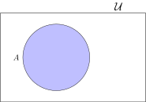

Set Theory

Set
A set is an unordered collection.
Set
A set is an unordered collection.
\[\{ 1,2,3 \} = \{2,1,3\}\]
Here are some sets
\[\{ a, b, c \}\]
\[\{ 1,2,3 \}\]
\[\{ \text{eagle}, \text{elk}, \text{emu}, \text{ermine} \}\]
\[\{ a, b, \{ 1,2,3 \}, \{ \text{eagle}, \text{elk}, \text{emu}, \text{ermine} \} \}\]
Statements about sets
\[A = \{1,2,3,4,5\}\]
Statements about sets
\[A = \{1,2,3,4,5\}\]
\[ |A| = 5 \]
\(A\) has cardinality \(5\)
Statements about sets
\[A = \{1,2,3,4,5\}\]
\[ 2 \in A \]
2 is an element of \(A\)
Statements about sets
\[A = \{1,2,3,4,5\}\]
\[ 0 \notin A \]
0 is NOT an element of \(A\)
Statements about sets
\[ \{1,2,3,4,5\} = \{3,4,1,5,2 \} \]
Exercise
Write down as many statements as you can about this set: \[P = \{a,b,c \} \]
Exercise
Write down as many statements as you can about this set: \[P = \{a,b,c \} \]
\( |P| = 3 \)
\( a \in P \)
\( b \in P \)
\( c \in P \)
\( a \in P \)
\( b \in P \)
\( c \in P \)
Statements about sets
\(\mathcal{U}\) is the universal set
It contains all possible elements
(of whatever universe we define).
(of whatever universe we define).
Statements about sets
\[ \mathcal{U} = \{1,2,3,4,5,6,7,8\} \]
\[ A = \{1,2,3,4,5\} \]

Statements about sets
\[A = \{1,2,3,4,5\}\]
\[B = \{2,4\} \]
\[B \subseteq A \]
\(B\) is a subset of \(A\)
Statements about sets
\[A = \{1,2,3,4,5\}\]
\[B = \{2,4\} \]
\[B \subset A \]
\(B\) is a strict subset of \(A\)
Set Operations
\[A = \{1,2,3,4\} \quad \quad B = \{3,4,5\}\]
Set Operations
\[A = \{1,2,3,4\} \quad \quad B = \{3,4,5\}\]
Union
| \[A \cup B = \{1,2,3,4,5\}\] |

|
Set Operations
\[A = \{1,2,3,4\} \quad \quad B = \{3,4,5\}\]
Intersection
| \[A \cap B = \{3,4\}\] |
|
Set Operations
\[ \mathcal{U} = \{1,2,3,4,5,6,7,8\} \]
\[ A = \{1,2,3,4,5\} \]
Complement
| \[ \bar{A} = \{6,7,8\} \] |

|
Set Operations
\[ A \cup \bar{A} = \]
\[ \quad \]
Set Operations
\[ A \cup \bar{A} = \mathcal{U} \]
\[ \quad \]
Set Operations
\[ A \cup \bar{A} = \mathcal{U} \]
\[ A \cap \bar{A} = \]
Set Operations
\[ A \cup \bar{A} = \mathcal{U} \]
\[ A \cap \bar{A} = \{ \text{ } \} \]
Set Operations
| \(A\) |

|
\(\bar{A}\) |
|
| \( A \cup B \) |
|
\(A \cap B\) |
|
©2025 Jedediyah Williams
This work is licensed under the Creative Commons
Attribution-NonCommercial-ShareAlike 4.0 International License.

To view a copy of this license, visit https://creativecommons.org/licenses/by-nc-sa/4.0/.